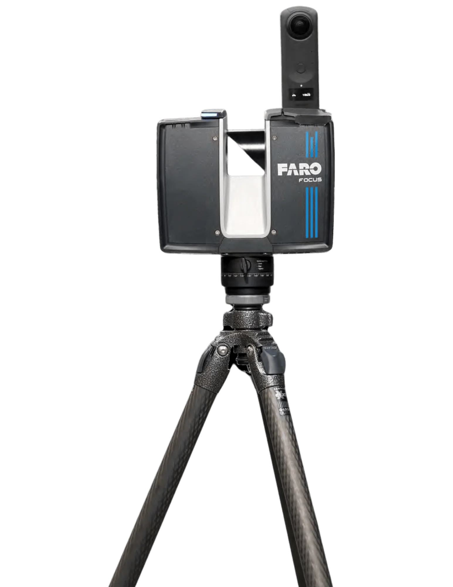
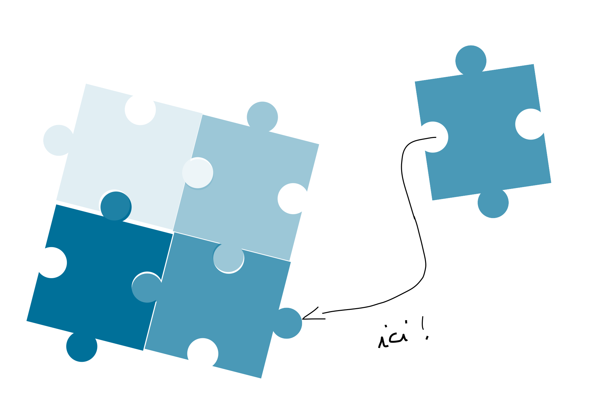
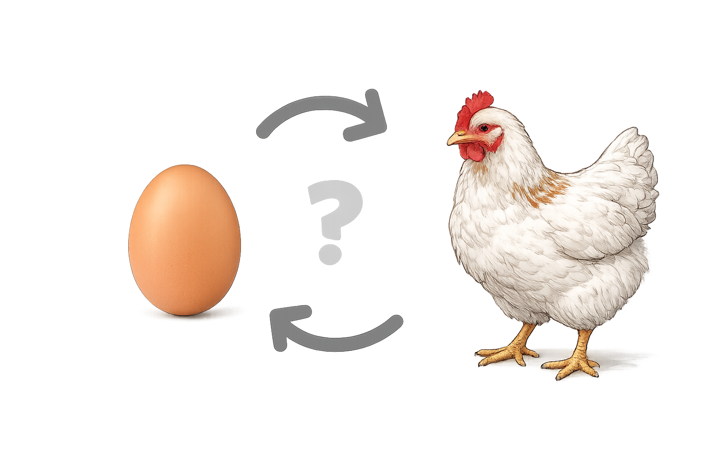
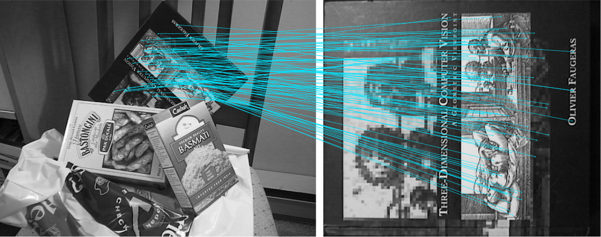

Reconstruction 3D
La dernière fois…
nous avons vu comment
reconstruire une scène
à partir d’images.
Cette fois ci…
nous allons
la reconstruire à partir
de points de mesures
Au cours de ce module, nous répondrons
à quatre grandes questions.
- Comment fusionner plusieurs scans ? CM1
- Comment retrouver une surface continue ? CM2
- Comment comprendre une scène ? CM3
- Comment apprendre directement à reconstruire ? CM4
Aujourd’hui,
nous commençons
par la première étape.
Comment fusionner plusieurs scans ?
Bloc 1
Imaginez que
tout à coup
soudainement
sans y prendre garde
vous vous dites
et si je numérisais
une cathédrale ?
Comment vous faites ?
Avec de la photogrammétrie ?
Oui…
mais regardons une autre approche.
La seconde possibilité est d’utiliser un LiDAR
C’est ce truc

Mais ça ne donne qu’un point de vue à la fois
Pour des objets immense
Il faut plusieurs centaines ou milliers de scans
Premier scan
Deuxième scan
Ces deux scans représentent-ils le même objet ?
Alors ça devrait être facile de les fusionner, non ?
Le probléme
Chaque scan est correct.
Mais ils ne sont pas
dans le même repère.
Ce problème possède un nom : Registration (Recalage)
Le premier grand problème de la reconstruction 3D
Le recalage est aussi présent dans d’autres domaines
Et a un facteur d’échelle
Une petite statue
≈ quelques dizaines de scans
Une voiture
≈ quelques centaines
Une cathédrale
≈ quelques milliers
Une ville
≈ plusieurs millions
Bon…
Vous avez maintenant des centaines de scans.
Ils représentent le même objet.
Mais chacun possède son propre repère.
Comment retrouver automatiquement
la transformation
entre deux scans ?
Bloc 2
Nous avons deux scans
Nous cherchons une transformation
\[ T=(R,\mathbf{t}) \]
Mais…
comment la calculer ?
Comme un puzzle…
Si nous connaissions
les correspondances
Le problème deviendrait simple.

Correspondance

Chaque point du scan A
correspond à un point du scan B.
Avec suffisamment de correspondances
on peut retrouver
la rotation
et la translation.
Mais…
Personne ne va placer
des milliers de correspondances
à la main.
Donc la question est...
Comment retrouver
automatiquement
les correspondances ?
L’idée la plus simple :
Pour chaque point…
chercher le point le plus proche.
Le plus proche voisin
(Nearest Neighbor)
Cette idée paraît simple…
mais elle pose déjà
de nombreux problèmes.
Bruit
Occlusions
Symétries
Recouvrement partiel
Le plus proche voisin n’est pas toujours le bon voisin.
Mais cela peut être itératif
Une bonne correspondance
une bonne transformation
de meilleures correspondances
Une idée…
qui va conduire à un algorithme célèbre.
Voici
ICP
Iterative Closest Point
Bloc 3
Houston
Nous avons un problème…
De bonnes correspondances permettent de calculer la transformation.
Mais…
une bonne transformation est nécessaire pour trouver les correspondances.

Qui vient en premier ?
Les correspondances ?
ou
La transformation ?
Ce problème possède une solution très élégante.
Faire les deux…
progressivement.
1. On suppose un premier alignement.
- On cherche les plus proches voisins.
- On calcule une meilleure transformation.
- On recommence.
Correspondances
Transformation
Correspondances
Transformation
À chaque itération…
les scans deviennent
un peu mieux alignés.
À chaque itération,
ICP fait correspondre
chaque point du nuage P
avec son plus proche voisin
dans le nuage Q.
Ces correspondances
définissent
un problème
d’optimisation.
\[ E(R,t)=\sum_{i=1}^{N}\left\|R\,p_i+t-q_i\right\|^2 \]
L’objectif est de trouver
la rotation
et la translation
qui minimisent
l’erreur d’alignement.
\[ (R^\star,t^\star)=\arg\min_{R,t} E(R,t) \]
Exemple d’optimisation
\[ x_{k+1} = x_k - \eta \, \nabla f(x_k) \]
\[ \underbrace{x_{k+1}}_{\text{nouvelle position}} = \underbrace{x_k}_{\text{position actuelle}} - \underbrace{\eta}_{\text{learning rate}} \, \underbrace{\nabla f(x_k)}_{\text{gradient}} \]
On mesure la qualité
de l’alignement
avec une erreur.
Plus cette erreur diminue,
meilleur est le recalage.
Lorsque l’erreur
ne diminue plus…
l’algorithme s’arrête.
Cette méthode s’appelle
Iterative Closest Point
ou simplement
ICP
ICP est aujourd’hui
l’un des algorithmes
les plus utilisés
pour le recalage 3D.
Mais personne n’est parfait
Bloc 4
ICP est simple.
ICP est rapide.
ICP fonctionne…
… à condition que tout se passe bien.
Peu de bruit
Fort recouvrement
Bonne initialisation
Mauvaise initialisation
ICP converge…
vers la mauvaise solution.
Alors que idéalement
Comment rendre ICP
plus robuste ?
Quelques améliorations célèbres
- Point-to-Plane ICP utilise les normales
- Colored ICP exploite la couleur
- Generalized ICP prend mieux en compte les erreurs de mesure
- Robust ICP réduit l’influence des mauvaises correspondances
Ou bien…
ne plus utiliser ICP
comme point de départ.
Détecter des caractéristiques
Trouver des correspondances fiables
Estimer une première transformation
Raffiner avec ICP
Recalage grossier
Recalage fin
Avec ICP,
chaque point cherche son plus proche voisin.
Correspondances denses
Pour l’initialisation, on préfère
peu de correspondances,
mais des correspondances très `caractéristiques.
Correspondances éparses
Exemple

Les points détectés
sont appelés
Keypoints
Chaque keypoint
est décrit
par un descripteur
(feature descriptor)
afin de pouvoir
le reconnaître
dans un autre scan.
Les keypoints
correspondent souvent
à des zones
très caractéristiques.
- un coin
- une arête
- une forte variation locale
Pipeline moderne
Acquisition
Features
Matching
Registration globale
ICP
Fusion
Ce qu’il faut retenir
La reconstruction 3D
ne consiste pas uniquement
à acquérir des données.
Elle consiste surtout
à les mettre
dans le même repère.
Le recalage est
un problème d’optimisation.
Trouver
la rotation
et la translation
qui expliquent le mieux
les observations.
ICP est simple.
ICP est élégant.
ICP reste aujourd’hui
l’une des briques fondamentales
de la reconstruction 3D.
Mais une fois les scans
alignés…
Il ne reste
qu’un nuage de points.
Comment retrouver
une surface continue
à partir de ces points ?
Réponse au prochain cours.
C’est tout pour aujourd’hui